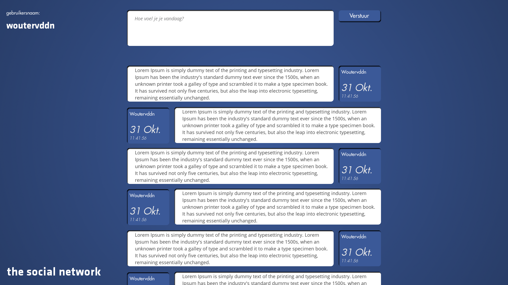

##Overzicht
- Algemene info
- Doel van workshops
- History
- HTML4 en CSS
- HTML5 en CSS3
- Eigen template maken
##Algemene info

##Wie?
- Wouter: w@vdnkr.be
- Berend: online@visionsandviews.net
##Meevolgen
- http://webvi.be/html
##Doel
##History
- Internet en WWW
- Server <> Client
###Statische pagina's

- Academische papers
- enkel delen van informatie
###Slimme, dynamische pagina's
- Servertalen
- later ook client talen
//PHP
....
$gebruikersnaam="John Doe";
echo "
";
echo "welkom, " + $gebruikersnaam;
echo "
";
....
welkom, John Doe
Wekom, John Doe
- Meer stijl dan enkel achtergronden en tekstkleuren
- Geboorte van CSS
- Cascading Style Sheets
###Dynamische pagina's met stijl

- basis gebleven
- mooier geheel, betere structuur en regels
- Geboorte HTML5 en CSS3
- Oude browsers = doorn in het oog
##HTML en CSS
- HTML = voor structuur
- CSS = voor design/stijl
basis website
< !DOCTYPE html >
< html >
< head >
Titel
< /head >
< body >
Welkom, John Doe
< /body >
< /html >
##Open favoriete website
http://www.simplehtmlguide.com/cheatsheet.phphttp://github.com/brixel/TheSocialNetwork
##En nu de CSS
- Wie wil spieken:
- [simpele css](https://github.com/Brixel/TheSocialNetwork/blob/master/html%2BgeneralCSS/css/main.css)
- [uitgebreide css](https://github.com/Brixel/TheSocialNetwork/blob/master/html%2BextendedCSS/css/main.css)
- [volledige css](https://github.com/Brixel/TheSocialNetwork/blob/master/html%2BstyledCSS/css/main.css)
- Cheatsheet:
- http://www.lesliefranke.com/files/reference/csscheatsheet.html
##Extra
- HTML5 heeft nog meer specifieke < tags >
- http://www.w3schools.com/html/html5_new_elements.asp